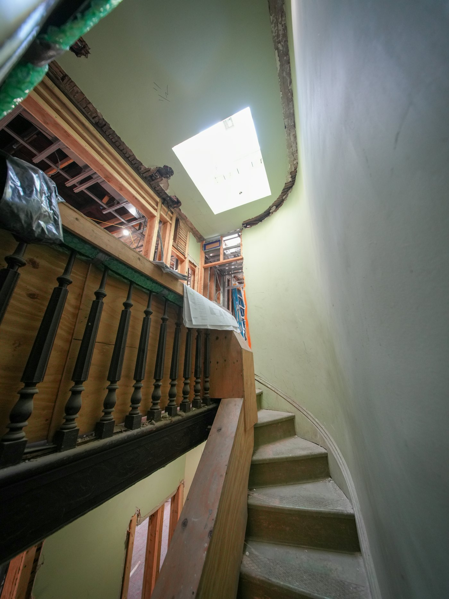

新築・注文住宅
設計から施工まで。自然素材を活かした家づくり。

新築・リフォーム 新宿区新宿七丁目
昭和22年、東大久保で開業。注文住宅から水まわりの修理、マンションやビルの改修まで、新宿の工務店がお引き受けします。
基礎の線
ご相談から完成まで、ひとつの会社が責任を持って。スクロールすると、図面の線が引かれていきます。
テレビのリフォーム番組への出演や、建築専門誌『新建築住宅特集』2018年3月号への掲載など、施工の確かさを評価いただいてきました。
東京23区から関東近県まで。自然素材を使った健康的な住まいづくりをお手伝いします。住宅保証機構の住宅保証制度にも登録しています。
設計から施工まで。自然素材を活かした家づくり。

水まわり、内装、外装から、スケルトンリフォームまで。

オーナー様向けの改修工事やリノベーションのご提案も。
| 定休日 | 日曜・祝祭日 |
|---|---|
| 対応エリア | 東京23区、関東近県 |
親切、丁寧に対応します。お見積もりのご依頼もお気軽にどうぞ。